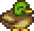

Na vida rural, os animais de fazenda desempenham papéis cruciais, não apenas como fontes de alimentos e produtos, mas também como companheiros leais e parte essencial da rotina diária. Desde as galinhas que nos presenteiam com ovos frescos até as vacas que nos proporcionam leite para queijos deliciosos, cada animal tem sua própria contribuição única para a sustentabilidade e a riqueza da vida agrícola. Vamos explorar o mundo encantador e diversificado dos animais de fazenda, onde a simplicidade se combina com a importância vital. (wiki stardewvalley.com)
Animais de galinheiro
Em "Stardew Valley", os animais de galinheiro são galinhas, patos, coelhos e dinossauros. Galinhas produzem ovos, patos produzem ovos de pato e penas, coelhos produzem lã e patas de coelho, e dinossauros produzem ovos de dinossauro. Alimente-os diariamente e mantenha o galinheiro aquecido no inverno.
Galinhas
Galinhas adultas produzirão ovos todas as manhãs, se alimentadas. Galinhas mais felizes podem produzir ovos maiores e mais valiosos.(wiki stardewvalley.com)
| imagem | nome | custo | produz | venda com 5 corações |
|---|---|---|---|---|
 |
galinha-padrao | 800 ouros | ovo | 1 040 ouros |
 |
galinha-padrao | 800 ouros | ovo marrom | 1 040 ouros |
 |
galinha-nula | N/A | ovo nulo | 1 040 ouros |
 |
galinha-azul | 800 ouros | ovo azul | 1 040 |
 |
galinha-de-ouro | N/A | ovo dourado | 1 040 |
Pato
Patos adultos vão botar um ovo todo dia ou soltar uma Pena de pato, onde este depende do seu nível de amizade com o animal, do humor e da sorte do jogador. Patos felizes tem mais chance de produzirem Pena de pato ao invés de ovos.(wiki stardewvalley.com)
| imagem | nome | custo | produz | venda com 5 corações |
|---|---|---|---|---|
|  | Pato | 1200 ouros | ovo de Pato | 1560 ouros |
Coelho
Quando um certo nível de relacionamento é atingido, eles podem produzir pé de coelho automaticamente assim como Lã.Alimente-os diariamente e mantenha o galinheiro aquecido no inverno para mantê-los felizes. Eles podem ser comprados na Marnie's Ranch por 8.000 ouros.(wiki stardewvalley.com)
| imagem | nome | custo | produz | venda com 5 corações |
|---|---|---|---|---|
 |
Coelho | 8000 ouros | Pé de coelho | 10400 ouros |
Animais de Celeiro
Esses animais não podem ser comprados até que um celeiro seja construído na sua fazenda, e eles ocupam um espaço no celeiro. Seus produtos podem ser coletados com uma ferramenta, ou no caso dos porcos, deixados no solo enquanto pastam.
Animais de celeiro podem engravidar aleatoriamente se a opção "permitir gravidez" estiver habilitada em seu menu de status. Essa opção aparece ao clicar com o botão direito no animal depois de interagir com ele por afeição. Um ícone no menu á direita pode ser marcado para permitir que o animal engravide. Se o animal engravidar, durante a noite uma caixa de mensagem aparecerá dizendo que um animal deu à luz. O jogo vai permitir que você escolha um nome para o novo animal. Para que a gravidez aconteça você precisa ter atualizado seu celeiro para um Celeiro Grande e ter espaço para mais um animal.
| imagem | nome | custo | produz | venda com 5 corações |
|---|---|---|---|---|
 |
Vaca Branca | 1500 ouros | Leite | 1950 ouros |  |
Vaca Marrom | 1500 ouros | Leite | 1950 ouros |